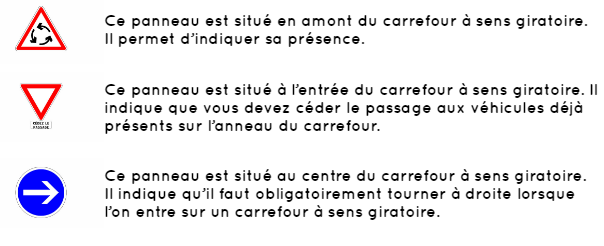

LES INTERSCTIONS (CARREFOURS À SENS GIRATOIRE-partie3)

Avant de nous attaquer aux carrefours à sens giratoire, nous allons répondre à une question qui revient souvent :
est-ce que les carrefours à sens giratoire et les ronds-points sont deux mots qui désignent la même chose ?
La réponse courte à cette question est : non.
Voici les différences entre un carrefour à sens giratoire et un rond-point :
Trois panneaux permettent d’indiquer la présence d’un carrefour à sens giratoire :
Bon courage pour votre code !